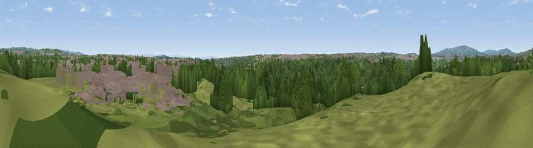

Viewpoint near Little Lever
#39957 in England · top 92% of its area beats it · near Little LeverWhere it is
The exact computed spot (SD 74475 07275). Click the marker for map links.
The view, rendered

A 360° render of this exact spot computed from the terrain model, tree cover and land cover — summer colours, afternoon light, calibrated against photographs of famous viewpoints. Real trees, hedges and buildings will differ in detail.
The panorama
Grey silhouette: terrain skyline in each direction (720 bearings, Earth curvature and refraction included). Dashed green: skyline with trees (+15 m) and buildings (+8 m) as obstacles. Blue strip: how far the ground is visible on each bearing.
Where the view opens
Wedge length = distance to the farthest visible ground on that bearing (vegetation-aware). Rings at 10, 25 and 50 km.
What fills the view
53% woodland · 25% built-up · 21% grassland · 1% water
Angular shares of the visible panorama (visual magnitude), not map area. Landscape diversity 0.47 (0–1 Shannon).
Key numbers
More beautiful places nearby
The staircase of upgrades: each row has a higher view potential than everything closer. Driving times are estimates from straight-line distance, calibrated against real road routing — check an actual route before setting out.
| Place | Direction | Drive | Score |
|---|---|---|---|
| Viewpoint near Prestolee | SE · 2 km | ~5 min | 29.6 |
| Viewpoint near Ainsworth | N · 3 km | ~7 min | 34.6 |
| Viewpoint near Bolton | W · 4 km | ~9 min | 51.8 |
| Viewpoint near Bradshaw | N · 5 km | ~11 min | 52.1 |
| Viewpoint near Bradshaw | N · 5 km | ~12 min | 59.9 |
| Viewpoint near Tottington | N · 6 km | ~13 min | 60.1 |
| Viewpoint near Heap Bridge | E · 8 km | ~17 min | 68.9 |
| Viewpoint near Egerton | NNW · 9 km | ~17 min | 69.9 |
53.56147, -2.38682 · source: screening · position refined by local search. Computed location — check access rights before visiting.